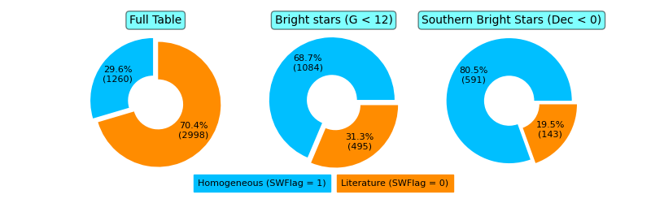
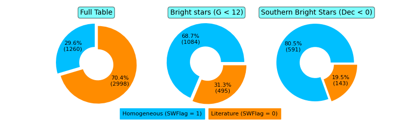

SWEET-Cat
A catalog of stellar parameters for stars with planets
|  |
|
SWEET-CatA catalog of stellar parameters for stars with planets | |||||
|  |
|
| Name | RA | DEC | gaia_dr3 | Gmag | Plx | Distance | Teff | eTeff | Logg | eLogg | [Fe/H] | e[Fe/H] | Vt | eVt | Logg_gaia | eLogg_gaia | Mass_t | eMass_t | Radius_t | eRadius_t | SWFlag | Reference |
|---|